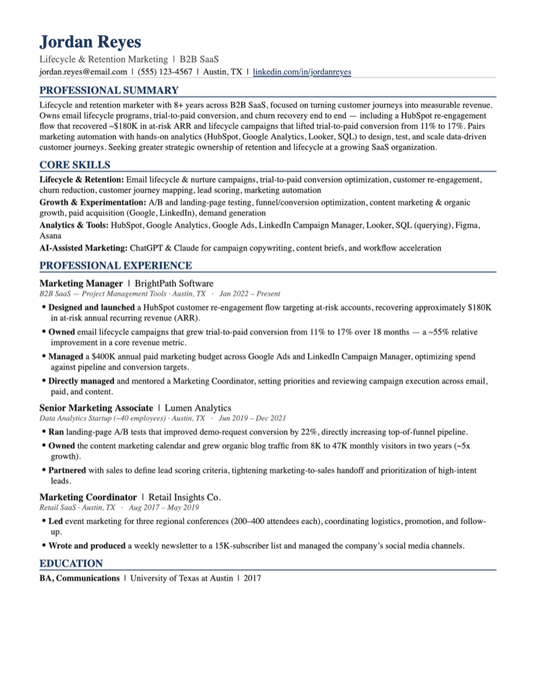
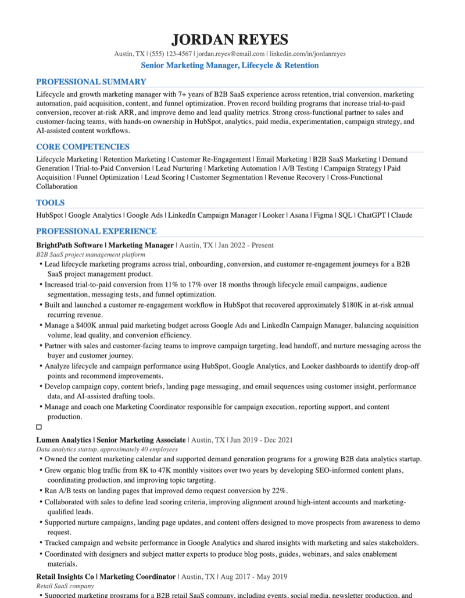
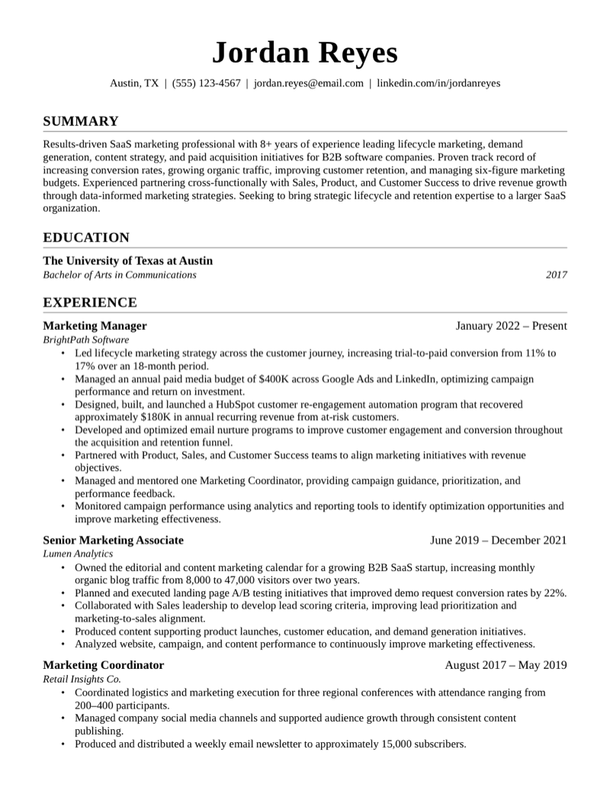
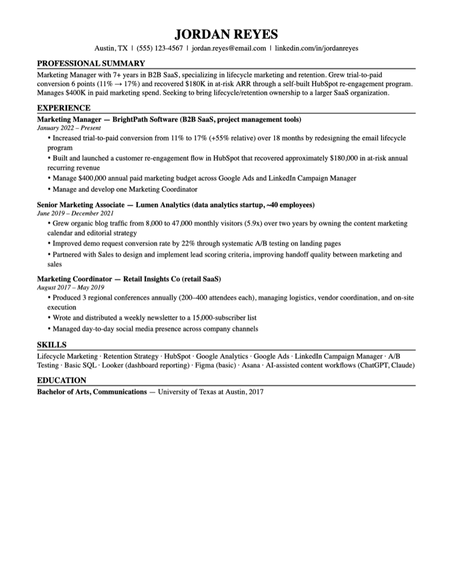

Claude, ChatGPT, Codex, and Claude Code — same fictional candidate, same prompt, word for word. We downloaded every file they actually produced and counted the pages ourselves. Here's the real scoreboard.
We invented a realistic candidate — Jordan Reyes, 7+ years in B2B SaaS marketing, applying for a Senior Marketing Manager, Lifecycle & Retention role — and gave all four tools the exact same unformatted background and the exact same instruction: turn this into a polished, ATS-friendly resume. No follow-up prompts, no edits. We took the first thing each tool produced, downloaded the actual file, and opened it.
Every category is scored 1–5, dot for dot, based only on what we found in the downloaded file — never the chat reply.
| Category | What it measures |
|---|---|
| Content Depth | How much of the candidate's real work and impact made it into the resume, without padding. |
| Structure & ATS-Safety | Real selectable text, no tables/text boxes/columns, contact info in the body — the things that actually break applicant tracking systems. |
| Page-Fit Verification | Whether the tool checked that its own output actually matched the stated length before handing it over. |
| Visual Polish | Typography, spacing, and design choices in the real file. |
| Honesty | Whether the tool invented any credential, certification, or scope of experience not present in the source material. |
| Category | Claude.ai |
ChatGPT |
Codex |
Claude Code |
|---|---|---|---|---|
| Content Depth & Coverage | ||||
| Structure & ATS-Safety | ||||
| Page-Fit Verification | ||||
| Visual Polish | ||||
| Honesty (no fabricated credentials) | ||||
| Total (out of 25) | 23 Winner |
16 | 18 Depth Winner |
16 |
The "Professional Summary" each tool wrote from the identical source material — verbatim, no edits.
"Lifecycle and retention marketer with 8+ years across B2B SaaS, focused on turning customer journeys into measurable revenue. Owns email lifecycle programs, trial-to-paid conversion, and churn recovery end to end..."
"Results-driven SaaS marketing professional with 8+ years of experience leading lifecycle marketing, demand generation, content strategy, and paid acquisition initiatives for B2B software companies..."
"Lifecycle and growth marketing manager with 7+ years of B2B SaaS experience across retention, trial conversion, marketing automation, paid acquisition, content, and funnel optimization..."
"Marketing Manager with 7+ years in B2B SaaS, specializing in lifecycle marketing and retention. Grew trial-to-paid conversion 6 points (11% → 17%) and recovered $180K in at-risk ARR..."




Most thorough coverage of the actual work, sharpest role targeting. Check the page count yourself before you send it.
The only one that verified its own output. Best visual design of the four. Trimmed some detail to make it fit.
There isn't one universal winner here — the honest finding is that these four tools optimized for different things without telling us. If you want the fuller picture, tell your tool explicitly to check the page count and keep the detail — none of them will do both by default yet.
Real files, real numbers, no sponsorships. Subscribe to get the next one first.
Subscribe free →